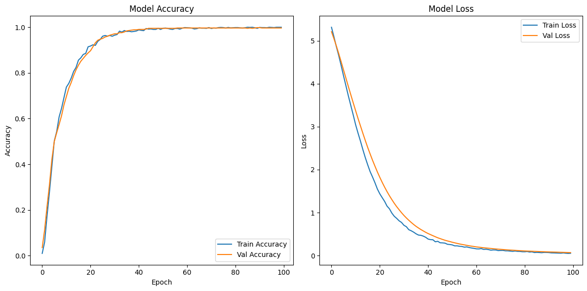
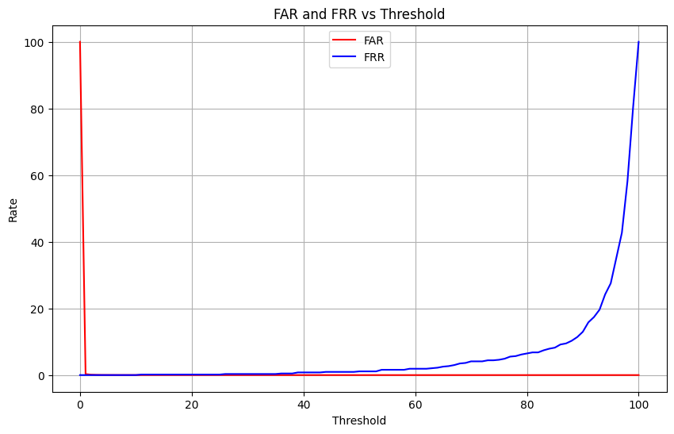

import os
import numpy as np
import pandas as pd
import torch
from PIL import Image
from torchvision import transforms
from tensorflow.keras.models import Sequential
import tensorflow.keras.layers as layers
from tensorflow.keras.utils import to_categorical
from sklearn.model_selection import KFold
from transformers import pipeline
from sklearn.metrics import precision_score, recall_score, f1_score, roc_curveSensor Level Fusion (Updated) Code for IITD dataset
Import all necessary libraris
Get direct feature from pickle file
!unzip Feature.zip -d .Archive: Feature.zip
creating: ./Feature/
inflating: ./Feature/data_new_mmu.pickle
inflating: ./Feature/IITD_Features.pickle
inflating: ./Feature/sensor_fusion_IID.pickle
inflating: ./Feature/sensor_fusion_MMU.pickle We store features in pickle file, So NO need to Extract again
import pickle
with open("Feature/sensor_fusion_IID.pickle", "rb") as f:
data = pickle.load(f)
len(data)
data_feature_label = datausing Gram-Schmidt process Create Orthogonal Matrix using user unquie key
def generate_orthogonal_matrix(user_key):
# Convert user_key to an integer (using first 16 digits if necessary)
key_int = int(str(user_key)[:25]) # Limit key length to first 25 digits for safety
key_int = key_int % (2**32) # Ensure the key is within the valid range for np.random.seed()
np.random.seed(key_int) # Seed the random generator using the integer value
# Generate a 4x4 random Gaussian matrix
random_matrix = np.random.randn(5, 5) # Gaussian distribution with mean=0 and std=1
# QR decomposition to generate an orthogonal matrix
Q, R = np.linalg.qr(random_matrix) # QR decomposition ensures Q is orthogonal
return Q.flatten().reshape(25, 1) # Flatten and reshape to a column vectorPassword Generator for Random String generation
import random
import string
def generate_random_string(length=10):
"""
Generate a random string of a given length.
Args:
length (int): The length of the random string (default is 10).
Returns:
str: A random string of the specified length
"""
# Define the characters to choose from: lowercase, uppercase, and digits
characters = string.ascii_letters + string.digits
# Randomly select characters from the pool and join them into a string
random_string = ''.join(random.choice(characters) for _ in range(length))
return random_string
Generating a strong (i.e., without leading zeroes) 10-digit code from a unique key using SHA256
import hashlib
import random
def generate_strong_code(unique_key):
"""
Generate a stronger 10-digit code using a unique key.
Args:
unique_key (str): The unique key to hash.
Returns:
str: A 10-digit code without weak leading zeros.
"""
# Create a SHA-256 hash of the unique key
hash_object = hashlib.sha256(unique_key.encode())
# Convert the hash to an integer and compress to 10 digits
hashed_int = int(hash_object.hexdigest(), 16)
# Use a combination of hashed value and randomization to make the code stronger
random.seed(hashed_int) # Use the hash as the seed for better randomness
random_number = random.randint(10**9, 10**12 - 1) # Ensures a 10-digit number
return str(random_number)
Password_list = {}
for item in data_feature_label.values():
key = int(item["id"])
password = generate_random_string(10)
Password_list[str(item["id"])] = generate_strong_code(str(password))
print(Password_list){'141': '913281795077', '037': '507588673033', '116': '703119249643', '204': '541839572057', '039': '985218672411', '042': '655172556154', '126': '923931314642', '210': '980927098478', '062': '141576639566', '133': '441130699037', '155': '80557389288', '089': '441856748559', '205': '552837174764', '193': '390704541647', '154': '882560479796', '044': '825381502244', '085': '182838270680', '088': '981576256736', '164': '598996571032', '192': '630632898918', '110': '495126940713', '207': '768160515264', '152': '523949107424', '076': '483339134509', '144': '793706939952', '082': '457151670041', '176': '747513254378', '083': '975634642076', '021': '262508343265', '041': '582886762777', '183': '767680095174', '058': '787773292991', '045': '783185408648', '220': '197659235089', '046': '127295356201', '043': '852402415246', '189': '288057095267', '212': '352505096103', '138': '721719782139', '123': '553912242059', '118': '727620583908', '169': '792233940962', '103': '771754097236', '180': '779415401424', '054': '358771121293', '148': '515946148858', '171': '616290952357', '024': '797163083940', '020': '355195398278', '033': '161789340653', '032': '738127306119', '097': '934594455611', '087': '621679913648', '177': '97678424300', '201': '612388792877', '114': '716249169355', '047': '600588982898', '159': '332202312523', '108': '796783758788', '199': '653972084927', '068': '607702749981', '065': '503266087617', '101': '246920213943', '057': '991563120030', '106': '801698391325', '136': '593278531396', '026': '291652068559', '151': '427657725584', '127': '807518017151', '146': '36314027936', '051': '829517780325', '029': '264714148481', '104': '688317893144', '066': '696638042710', '215': '343888895763', '119': '12376667348', '075': '205899603551', '115': '510386507178', '120': '252593869322', '188': '387097071405', '031': '924722067736', '178': '468653796074', '166': '562501692522', '203': '429273286678', '060': '475068002110', '094': '534015530450', '038': '93888230420', '208': '626898944464', '149': '8762579360', '140': '973072847801', '213': '171558688639', '105': '833176636337', '125': '921892953945', '170': '700918508357', '053': '83737849278', '022': '448279853806', '091': '39181534837', '211': '931666808667', '015': '228378245514', '061': '180176589864', '052': '350532674231', '221': '638551090026', '102': '297691175953', '014': '858195374787', '181': '722361287560', '113': '758962379669', '172': '379231540428', '112': '726039441868', '216': '491240246068', '218': '684857505409', '093': '25266585721', '070': '478323172305', '173': '717053298310', '202': '626423637725', '175': '428447521397', '161': '377157935149', '030': '632134556417', '134': '425951154605', '132': '425735264773', '223': '888890734144', '168': '663862412738', '036': '240048057022', '162': '160725699656', '017': '834908367228', '222': '712251516287', '056': '758690402592', '174': '96159197630', '184': '858700585914', '099': '541268057634', '095': '182837298772', '064': '79999431482', '163': '385496617790', '209': '646885563008', '016': '958716952989', '131': '96945058277', '067': '24754533118', '109': '520631973248', '128': '883948672012', '122': '981721113673', '111': '578885110916', '100': '3797790963', '049': '502808215113', '185': '598636895468', '214': '582876462993', '137': '425815287216', '179': '183320655843', '224': '88664570641', '080': '560768118176', '186': '851630480135', '187': '361199449600', '098': '802548347254', '048': '147344227055', '145': '373274234434', '190': '259018571438', '165': '297628906325', '157': '877846208967', '182': '193368010209', '069': '444693729496', '194': '232005924022', '063': '791288413526', '200': '408579830982', '129': '647538559059', '086': '309058214094', '217': '482290096870', '081': '493959851235', '050': '249663624717', '019': '726219842715', '167': '706622462271', '072': '592507340406', '135': '6586180170', '077': '303354740826', '150': '204228495615', '124': '444415225725', '027': '368686449579', '198': '118904350992', '028': '680126830179', '078': '973106735018', '084': '590658983470', '090': '302991403693', '023': '596921899118', '035': '669303354119', '059': '929156165855', '153': '385528121853', '156': '64380092581', '018': '582319816391', '117': '280479635077', '096': '558038779984', '142': '280710698030', '195': '338971810767', '055': '188517804799', '139': '368059612550', '219': '249934590219', '121': '575164260443', '158': '215891775981', '025': '100334240270', '196': '14306596224', '071': '984471979943', '034': '697936423649', '160': '278782760411', '191': '938182084338', '143': '403593680850', '197': '411825241737', '092': '823421441728', '079': '850109595454', '073': '924867137497', '107': '956310131397', '074': '840513873246', '040': '539054337804', '206': '208253754407', '147': '825254763816', '130': '353207174070'}Create Cancelable Templates using
Cancelable Templates = Orthogonal Matrix x Feature
# Generate cancelable templates and prepare data for classification
images, labels_arr = [], []
for item in data_feature_label.values():
crossfolded_image = np.array(item["crossfold"][0]).reshape(1, 768)
# Generate cancelable matrix
key = int(Password_list[str(item["id"])])
orthogonal_matrix = generate_orthogonal_matrix(int(int(Password_list[item["id"]])/100))
cancelable_matrix = np.dot(orthogonal_matrix, crossfolded_image)
images.append(cancelable_matrix)
labels_arr.append(item["id"])orthogonal_matrixarray([[-0.23188671],
[-0.47182881],
[ 0.57447516],
[ 0.51606886],
[ 0.35673149],
[-0.48556126],
[-0.22670132],
[ 0.41593143],
[-0.55821541],
[-0.47773776],
[-0.60277483],
[-0.18499224],
[-0.51219098],
[-0.23788298],
[ 0.53245889],
[-0.58496234],
[ 0.48462285],
[-0.10209187],
[ 0.53722403],
[-0.35203316],
[-0.07028783],
[ 0.67594574],
[ 0.47351556],
[-0.27725534],
[ 0.4868978 ]])Remove Unwanted Classes and start from 0
total_classes = len(np.unique(labels_arr))+1
print("total_classes",total_classes)
labels_arr = np.array([int(i) for i in labels_arr])
count = 1
for i in range(len(np.unique(labels_arr))):
flag = True
while(flag):
if count not in labels_arr:
count+=1
else:
flag = False
labels_arr[labels_arr==count]=i
total_classes 212Reshape the each image Feature
# Prepare data for K-Fold Cross Validation
all_images = np.array(images).reshape(len(images), 25, 768, 1)
y_data_cat = to_categorical(labels_arr, num_classes=total_classes)Deep Neural Network Model
from tensorflow.keras.optimizers import Adam
def create_cnn_model():
model = Sequential([
layers.Flatten(input_shape=(25, 768, 1)),
layers.Dense(300, activation='relu'),
# layers.Dense(750, activation='relu'),
layers.Dropout(0.4),
layers.Dense(total_classes, activation='softmax')
])
learning_rate = 0.00001 # Set your desired learning rate
optimizer = Adam(learning_rate=learning_rate)
model.compile(optimizer=optimizer, loss='categorical_crossentropy', metrics=['accuracy'])
return modelRunnig code with Early Stopping
# For IITD
from sklearn.model_selection import train_test_split
from tensorflow.keras.callbacks import EarlyStopping
# Define EarlyStopping callback
early_stopping = EarlyStopping(
monitor='val_loss', # Metric to monitor for stopping (can be 'val_accuracy', etc.)
patience=5, # Number of epochs with no improvement before stopping
min_delta=0.001, # Minimum change to qualify as an improvement
mode='auto', # 'auto', 'min', 'max'. 'min' for loss, 'max' for accuracy
verbose=1, # Verbosity level (1 for detailed logging)
restore_best_weights=True # Restore model weights from the epoch with the best monitored metric
)
# Split the data into training and validation sets
X_train, X_val, y_train, y_val = train_test_split(all_images, y_data_cat, test_size=0.3, random_state=42)
# Create and train the model
model = create_cnn_model()
print("Training the model...")
# history = model.fit(X_train, y_train, epochs=5, batch_size=32, validation_data=(X_val, y_val), verbose=1)
# Train the model with EarlyStopping
history = model.fit(
X_train, y_train,
epochs=100, # You can still set a high number of epochs here; early stopping will stop training earlier if no improvement
batch_size=32,
validation_data=(X_val, y_val),
verbose=1,
callbacks=[early_stopping] # Pass the early stopping callback here
)
# Evaluate the model
scores = model.evaluate(X_val, y_val, verbose=0)
print(f"\nValidation Results:")
print(f"Loss = {scores[0]}")
print(f"Accuracy = {scores[1] * 100}%")
import matplotlib.pyplot as plt
# Plotting the accuracy
plt.figure(figsize=(12, 6))
# Plot training & validation accuracy values
plt.subplot(1, 2, 1)
plt.plot(history.history['accuracy'], label='Train Accuracy')
plt.plot(history.history['val_accuracy'], label='Val Accuracy')
plt.title('Model Accuracy')
plt.xlabel('Epoch')
plt.ylabel('Accuracy')
plt.legend(loc='lower right')
# Plotting the loss
plt.subplot(1, 2, 2)
plt.plot(history.history['loss'], label='Train Loss')
plt.plot(history.history['val_loss'], label='Val Loss')
plt.title('Model Loss')
plt.xlabel('Epoch')
plt.ylabel('Loss')
plt.legend(loc='upper right')
# Display the plots
plt.tight_layout()
plt.show()Training the model...
Epoch 1/100
46/46 ━━━━━━━━━━━━━━━━━━━━ 7s 128ms/step - accuracy: 0.0061 - loss: 5.3642 - val_accuracy: 0.0348 - val_loss: 5.2160
Epoch 2/100
46/46 ━━━━━━━━━━━━━━━━━━━━ 4s 85ms/step - accuracy: 0.0427 - loss: 5.1454 - val_accuracy: 0.1123 - val_loss: 5.0543
Epoch 3/100
46/46 ━━━━━━━━━━━━━━━━━━━━ 6s 94ms/step - accuracy: 0.1524 - loss: 4.9083 - val_accuracy: 0.2152 - val_loss: 4.8863
Epoch 4/100
46/46 ━━━━━━━━━━━━━━━━━━━━ 6s 109ms/step - accuracy: 0.2559 - loss: 4.7066 - val_accuracy: 0.3101 - val_loss: 4.7054
Epoch 5/100
46/46 ━━━━━━━━━━━━━━━━━━━━ 4s 87ms/step - accuracy: 0.3659 - loss: 4.4858 - val_accuracy: 0.4209 - val_loss: 4.5160
Epoch 6/100
46/46 ━━━━━━━━━━━━━━━━━━━━ 4s 90ms/step - accuracy: 0.5006 - loss: 4.2265 - val_accuracy: 0.5000 - val_loss: 4.3218
Epoch 7/100
46/46 ━━━━━━━━━━━━━━━━━━━━ 6s 115ms/step - accuracy: 0.5402 - loss: 4.0051 - val_accuracy: 0.5380 - val_loss: 4.1284
Epoch 8/100
46/46 ━━━━━━━━━━━━━━━━━━━━ 4s 84ms/step - accuracy: 0.6102 - loss: 3.7684 - val_accuracy: 0.5744 - val_loss: 3.9347
Epoch 9/100
46/46 ━━━━━━━━━━━━━━━━━━━━ 6s 96ms/step - accuracy: 0.6367 - loss: 3.5456 - val_accuracy: 0.6123 - val_loss: 3.7455
Epoch 10/100
46/46 ━━━━━━━━━━━━━━━━━━━━ 5s 99ms/step - accuracy: 0.7038 - loss: 3.2912 - val_accuracy: 0.6598 - val_loss: 3.5578
Epoch 11/100
46/46 ━━━━━━━━━━━━━━━━━━━━ 4s 84ms/step - accuracy: 0.7328 - loss: 3.0769 - val_accuracy: 0.6962 - val_loss: 3.3733
Epoch 12/100
46/46 ━━━━━━━━━━━━━━━━━━━━ 4s 84ms/step - accuracy: 0.7490 - loss: 2.9308 - val_accuracy: 0.7326 - val_loss: 3.1924
Epoch 13/100
46/46 ━━━━━━━━━━━━━━━━━━━━ 6s 99ms/step - accuracy: 0.7837 - loss: 2.6879 - val_accuracy: 0.7579 - val_loss: 3.0198
Epoch 14/100
46/46 ━━━━━━━━━━━━━━━━━━━━ 4s 80ms/step - accuracy: 0.7998 - loss: 2.5314 - val_accuracy: 0.7880 - val_loss: 2.8472
Epoch 15/100
46/46 ━━━━━━━━━━━━━━━━━━━━ 4s 89ms/step - accuracy: 0.8334 - loss: 2.2969 - val_accuracy: 0.8133 - val_loss: 2.6799
Epoch 16/100
46/46 ━━━━━━━━━━━━━━━━━━━━ 5s 114ms/step - accuracy: 0.8562 - loss: 2.1569 - val_accuracy: 0.8339 - val_loss: 2.5174
Epoch 17/100
46/46 ━━━━━━━━━━━━━━━━━━━━ 9s 92ms/step - accuracy: 0.8660 - loss: 1.9566 - val_accuracy: 0.8513 - val_loss: 2.3666
Epoch 18/100
46/46 ━━━━━━━━━━━━━━━━━━━━ 6s 109ms/step - accuracy: 0.8789 - loss: 1.8985 - val_accuracy: 0.8639 - val_loss: 2.2191
Epoch 19/100
46/46 ━━━━━━━━━━━━━━━━━━━━ 4s 88ms/step - accuracy: 0.8862 - loss: 1.6906 - val_accuracy: 0.8766 - val_loss: 2.0819
Epoch 20/100
46/46 ━━━━━━━━━━━━━━━━━━━━ 5s 99ms/step - accuracy: 0.9119 - loss: 1.5563 - val_accuracy: 0.8877 - val_loss: 1.9469
Epoch 21/100
46/46 ━━━━━━━━━━━━━━━━━━━━ 5s 118ms/step - accuracy: 0.9230 - loss: 1.4333 - val_accuracy: 0.8972 - val_loss: 1.8224
Epoch 22/100
46/46 ━━━━━━━━━━━━━━━━━━━━ 9s 97ms/step - accuracy: 0.9283 - loss: 1.3577 - val_accuracy: 0.9146 - val_loss: 1.7038
Epoch 23/100
46/46 ━━━━━━━━━━━━━━━━━━━━ 6s 107ms/step - accuracy: 0.9153 - loss: 1.2735 - val_accuracy: 0.9320 - val_loss: 1.5929
Epoch 24/100
46/46 ━━━━━━━━━━━━━━━━━━━━ 4s 80ms/step - accuracy: 0.9373 - loss: 1.1695 - val_accuracy: 0.9430 - val_loss: 1.4887
Epoch 25/100
46/46 ━━━━━━━━━━━━━━━━━━━━ 6s 101ms/step - accuracy: 0.9553 - loss: 1.0822 - val_accuracy: 0.9478 - val_loss: 1.3917
Epoch 26/100
46/46 ━━━━━━━━━━━━━━━━━━━━ 5s 99ms/step - accuracy: 0.9640 - loss: 0.9721 - val_accuracy: 0.9509 - val_loss: 1.3020
Epoch 27/100
46/46 ━━━━━━━━━━━━━━━━━━━━ 4s 84ms/step - accuracy: 0.9680 - loss: 0.9458 - val_accuracy: 0.9573 - val_loss: 1.2162
Epoch 28/100
46/46 ━━━━━━━━━━━━━━━━━━━━ 5s 115ms/step - accuracy: 0.9647 - loss: 0.8922 - val_accuracy: 0.9604 - val_loss: 1.1378
Epoch 29/100
46/46 ━━━━━━━━━━━━━━━━━━━━ 5s 106ms/step - accuracy: 0.9658 - loss: 0.8016 - val_accuracy: 0.9652 - val_loss: 1.0667
Epoch 30/100
46/46 ━━━━━━━━━━━━━━━━━━━━ 4s 88ms/step - accuracy: 0.9578 - loss: 0.7852 - val_accuracy: 0.9684 - val_loss: 0.9972
Epoch 31/100
46/46 ━━━━━━━━━━━━━━━━━━━━ 4s 86ms/step - accuracy: 0.9683 - loss: 0.6856 - val_accuracy: 0.9715 - val_loss: 0.9335
Epoch 32/100
46/46 ━━━━━━━━━━━━━━━━━━━━ 6s 120ms/step - accuracy: 0.9589 - loss: 0.6896 - val_accuracy: 0.9715 - val_loss: 0.8756
Epoch 33/100
46/46 ━━━━━━━━━━━━━━━━━━━━ 4s 88ms/step - accuracy: 0.9842 - loss: 0.6018 - val_accuracy: 0.9763 - val_loss: 0.8213
Epoch 34/100
46/46 ━━━━━━━━━━━━━━━━━━━━ 5s 83ms/step - accuracy: 0.9808 - loss: 0.5658 - val_accuracy: 0.9763 - val_loss: 0.7712
Epoch 35/100
46/46 ━━━━━━━━━━━━━━━━━━━━ 6s 113ms/step - accuracy: 0.9884 - loss: 0.5426 - val_accuracy: 0.9794 - val_loss: 0.7237
Epoch 36/100
46/46 ━━━━━━━━━━━━━━━━━━━━ 5s 112ms/step - accuracy: 0.9706 - loss: 0.5394 - val_accuracy: 0.9842 - val_loss: 0.6799
Epoch 37/100
46/46 ━━━━━━━━━━━━━━━━━━━━ 10s 95ms/step - accuracy: 0.9838 - loss: 0.4797 - val_accuracy: 0.9858 - val_loss: 0.6419
Epoch 38/100
46/46 ━━━━━━━━━━━━━━━━━━━━ 5s 93ms/step - accuracy: 0.9842 - loss: 0.4719 - val_accuracy: 0.9873 - val_loss: 0.6054
Epoch 39/100
46/46 ━━━━━━━━━━━━━━━━━━━━ 6s 130ms/step - accuracy: 0.9803 - loss: 0.4437 - val_accuracy: 0.9889 - val_loss: 0.5729
Epoch 40/100
46/46 ━━━━━━━━━━━━━━━━━━━━ 4s 95ms/step - accuracy: 0.9822 - loss: 0.4246 - val_accuracy: 0.9889 - val_loss: 0.5408
Epoch 41/100
46/46 ━━━━━━━━━━━━━━━━━━━━ 5s 95ms/step - accuracy: 0.9870 - loss: 0.4177 - val_accuracy: 0.9905 - val_loss: 0.5118
Epoch 42/100
46/46 ━━━━━━━━━━━━━━━━━━━━ 6s 113ms/step - accuracy: 0.9832 - loss: 0.3857 - val_accuracy: 0.9905 - val_loss: 0.4866
Epoch 43/100
46/46 ━━━━━━━━━━━━━━━━━━━━ 4s 90ms/step - accuracy: 0.9833 - loss: 0.3793 - val_accuracy: 0.9905 - val_loss: 0.4613
Epoch 44/100
46/46 ━━━━━━━━━━━━━━━━━━━━ 5s 102ms/step - accuracy: 0.9950 - loss: 0.3261 - val_accuracy: 0.9921 - val_loss: 0.4368
Epoch 45/100
46/46 ━━━━━━━━━━━━━━━━━━━━ 6s 126ms/step - accuracy: 0.9921 - loss: 0.3357 - val_accuracy: 0.9953 - val_loss: 0.4129
Epoch 46/100
46/46 ━━━━━━━━━━━━━━━━━━━━ 4s 93ms/step - accuracy: 0.9910 - loss: 0.3005 - val_accuracy: 0.9953 - val_loss: 0.3933
Epoch 47/100
46/46 ━━━━━━━━━━━━━━━━━━━━ 5s 102ms/step - accuracy: 0.9906 - loss: 0.2965 - val_accuracy: 0.9953 - val_loss: 0.3738
Epoch 48/100
46/46 ━━━━━━━━━━━━━━━━━━━━ 5s 111ms/step - accuracy: 0.9915 - loss: 0.2992 - val_accuracy: 0.9953 - val_loss: 0.3550
Epoch 49/100
46/46 ━━━━━━━━━━━━━━━━━━━━ 4s 84ms/step - accuracy: 0.9959 - loss: 0.2775 - val_accuracy: 0.9953 - val_loss: 0.3396
Epoch 50/100
46/46 ━━━━━━━━━━━━━━━━━━━━ 6s 96ms/step - accuracy: 0.9953 - loss: 0.2518 - val_accuracy: 0.9953 - val_loss: 0.3250
Epoch 51/100
46/46 ━━━━━━━━━━━━━━━━━━━━ 6s 119ms/step - accuracy: 0.9965 - loss: 0.2396 - val_accuracy: 0.9953 - val_loss: 0.3090
Epoch 52/100
46/46 ━━━━━━━━━━━━━━━━━━━━ 4s 93ms/step - accuracy: 0.9977 - loss: 0.2282 - val_accuracy: 0.9953 - val_loss: 0.2957
Epoch 53/100
46/46 ━━━━━━━━━━━━━━━━━━━━ 6s 105ms/step - accuracy: 0.9936 - loss: 0.2264 - val_accuracy: 0.9953 - val_loss: 0.2820
Epoch 54/100
46/46 ━━━━━━━━━━━━━━━━━━━━ 4s 86ms/step - accuracy: 0.9929 - loss: 0.2163 - val_accuracy: 0.9953 - val_loss: 0.2695
Epoch 55/100
46/46 ━━━━━━━━━━━━━━━━━━━━ 5s 104ms/step - accuracy: 0.9908 - loss: 0.2064 - val_accuracy: 0.9953 - val_loss: 0.2580
Epoch 56/100
46/46 ━━━━━━━━━━━━━━━━━━━━ 5s 119ms/step - accuracy: 0.9960 - loss: 0.1906 - val_accuracy: 0.9953 - val_loss: 0.2480
Epoch 57/100
46/46 ━━━━━━━━━━━━━━━━━━━━ 4s 92ms/step - accuracy: 0.9945 - loss: 0.1987 - val_accuracy: 0.9968 - val_loss: 0.2367
Epoch 58/100
46/46 ━━━━━━━━━━━━━━━━━━━━ 5s 90ms/step - accuracy: 0.9904 - loss: 0.1961 - val_accuracy: 0.9968 - val_loss: 0.2266
Epoch 59/100
46/46 ━━━━━━━━━━━━━━━━━━━━ 5s 108ms/step - accuracy: 0.9957 - loss: 0.1677 - val_accuracy: 0.9968 - val_loss: 0.2175
Epoch 60/100
46/46 ━━━━━━━━━━━━━━━━━━━━ 4s 95ms/step - accuracy: 0.9988 - loss: 0.1637 - val_accuracy: 0.9968 - val_loss: 0.2091
Epoch 61/100
46/46 ━━━━━━━━━━━━━━━━━━━━ 5s 90ms/step - accuracy: 0.9983 - loss: 0.1646 - val_accuracy: 0.9968 - val_loss: 0.2006
Epoch 62/100
46/46 ━━━━━━━━━━━━━━━━━━━━ 7s 121ms/step - accuracy: 0.9966 - loss: 0.1423 - val_accuracy: 0.9968 - val_loss: 0.1939
Epoch 63/100
46/46 ━━━━━━━━━━━━━━━━━━━━ 9s 89ms/step - accuracy: 0.9961 - loss: 0.1607 - val_accuracy: 0.9968 - val_loss: 0.1869
Epoch 64/100
46/46 ━━━━━━━━━━━━━━━━━━━━ 5s 117ms/step - accuracy: 0.9954 - loss: 0.1424 - val_accuracy: 0.9968 - val_loss: 0.1808
Epoch 65/100
46/46 ━━━━━━━━━━━━━━━━━━━━ 4s 82ms/step - accuracy: 0.9946 - loss: 0.1429 - val_accuracy: 0.9968 - val_loss: 0.1751
Epoch 66/100
46/46 ━━━━━━━━━━━━━━━━━━━━ 6s 96ms/step - accuracy: 0.9977 - loss: 0.1470 - val_accuracy: 0.9968 - val_loss: 0.1695
Epoch 67/100
46/46 ━━━━━━━━━━━━━━━━━━━━ 6s 122ms/step - accuracy: 0.9980 - loss: 0.1184 - val_accuracy: 0.9968 - val_loss: 0.1639
Epoch 68/100
46/46 ━━━━━━━━━━━━━━━━━━━━ 9s 92ms/step - accuracy: 0.9946 - loss: 0.1331 - val_accuracy: 0.9968 - val_loss: 0.1584
Epoch 69/100
46/46 ━━━━━━━━━━━━━━━━━━━━ 6s 115ms/step - accuracy: 0.9964 - loss: 0.1254 - val_accuracy: 0.9968 - val_loss: 0.1528
Epoch 70/100
46/46 ━━━━━━━━━━━━━━━━━━━━ 10s 101ms/step - accuracy: 0.9977 - loss: 0.1188 - val_accuracy: 0.9968 - val_loss: 0.1478
Epoch 71/100
46/46 ━━━━━━━━━━━━━━━━━━━━ 5s 111ms/step - accuracy: 0.9958 - loss: 0.1173 - val_accuracy: 0.9968 - val_loss: 0.1436
Epoch 72/100
46/46 ━━━━━━━━━━━━━━━━━━━━ 10s 102ms/step - accuracy: 0.9980 - loss: 0.1160 - val_accuracy: 0.9968 - val_loss: 0.1389
Epoch 73/100
46/46 ━━━━━━━━━━━━━━━━━━━━ 5s 104ms/step - accuracy: 0.9976 - loss: 0.1053 - val_accuracy: 0.9968 - val_loss: 0.1348
Epoch 74/100
46/46 ━━━━━━━━━━━━━━━━━━━━ 5s 112ms/step - accuracy: 0.9997 - loss: 0.1118 - val_accuracy: 0.9968 - val_loss: 0.1302
Epoch 75/100
46/46 ━━━━━━━━━━━━━━━━━━━━ 5s 101ms/step - accuracy: 0.9994 - loss: 0.1042 - val_accuracy: 0.9968 - val_loss: 0.1262
Epoch 76/100
46/46 ━━━━━━━━━━━━━━━━━━━━ 6s 120ms/step - accuracy: 0.9992 - loss: 0.0915 - val_accuracy: 0.9968 - val_loss: 0.1231
Epoch 77/100
46/46 ━━━━━━━━━━━━━━━━━━━━ 4s 97ms/step - accuracy: 0.9967 - loss: 0.0996 - val_accuracy: 0.9968 - val_loss: 0.1196
Epoch 78/100
46/46 ━━━━━━━━━━━━━━━━━━━━ 7s 137ms/step - accuracy: 0.9998 - loss: 0.0972 - val_accuracy: 0.9968 - val_loss: 0.1160
Epoch 79/100
46/46 ━━━━━━━━━━━━━━━━━━━━ 8s 92ms/step - accuracy: 0.9976 - loss: 0.0931 - val_accuracy: 0.9968 - val_loss: 0.1127
Epoch 80/100
46/46 ━━━━━━━━━━━━━━━━━━━━ 7s 137ms/step - accuracy: 0.9982 - loss: 0.0836 - val_accuracy: 0.9968 - val_loss: 0.1097
Epoch 81/100
46/46 ━━━━━━━━━━━━━━━━━━━━ 4s 87ms/step - accuracy: 0.9998 - loss: 0.0819 - val_accuracy: 0.9968 - val_loss: 0.1059
Epoch 82/100
46/46 ━━━━━━━━━━━━━━━━━━━━ 5s 105ms/step - accuracy: 0.9981 - loss: 0.0914 - val_accuracy: 0.9968 - val_loss: 0.1033
Epoch 83/100
46/46 ━━━━━━━━━━━━━━━━━━━━ 5s 113ms/step - accuracy: 0.9973 - loss: 0.0773 - val_accuracy: 0.9968 - val_loss: 0.1010
Epoch 84/100
46/46 ━━━━━━━━━━━━━━━━━━━━ 5s 114ms/step - accuracy: 0.9966 - loss: 0.0876 - val_accuracy: 0.9968 - val_loss: 0.0989
Epoch 85/100
46/46 ━━━━━━━━━━━━━━━━━━━━ 10s 104ms/step - accuracy: 0.9977 - loss: 0.0712 - val_accuracy: 0.9968 - val_loss: 0.0964
Epoch 86/100
46/46 ━━━━━━━━━━━━━━━━━━━━ 4s 84ms/step - accuracy: 1.0000 - loss: 0.0742 - val_accuracy: 0.9953 - val_loss: 0.0942
Epoch 87/100
46/46 ━━━━━━━━━━━━━━━━━━━━ 6s 115ms/step - accuracy: 0.9996 - loss: 0.0657 - val_accuracy: 0.9968 - val_loss: 0.0919
Epoch 88/100
46/46 ━━━━━━━━━━━━━━━━━━━━ 10s 98ms/step - accuracy: 1.0000 - loss: 0.0635 - val_accuracy: 0.9953 - val_loss: 0.0897
Epoch 89/100
46/46 ━━━━━━━━━━━━━━━━━━━━ 7s 135ms/step - accuracy: 0.9968 - loss: 0.0805 - val_accuracy: 0.9968 - val_loss: 0.0877
Epoch 90/100
46/46 ━━━━━━━━━━━━━━━━━━━━ 4s 87ms/step - accuracy: 0.9968 - loss: 0.0703 - val_accuracy: 0.9984 - val_loss: 0.0856
Epoch 91/100
46/46 ━━━━━━━━━━━━━━━━━━━━ 4s 89ms/step - accuracy: 0.9996 - loss: 0.0677 - val_accuracy: 0.9984 - val_loss: 0.0836
Epoch 92/100
46/46 ━━━━━━━━━━━━━━━━━━━━ 6s 116ms/step - accuracy: 0.9995 - loss: 0.0593 - val_accuracy: 0.9968 - val_loss: 0.0817
Epoch 93/100
46/46 ━━━━━━━━━━━━━━━━━━━━ 4s 87ms/step - accuracy: 0.9990 - loss: 0.0586 - val_accuracy: 0.9968 - val_loss: 0.0800
Epoch 94/100
46/46 ━━━━━━━━━━━━━━━━━━━━ 6s 98ms/step - accuracy: 0.9972 - loss: 0.0589 - val_accuracy: 0.9968 - val_loss: 0.0783
Epoch 95/100
46/46 ━━━━━━━━━━━━━━━━━━━━ 6s 120ms/step - accuracy: 1.0000 - loss: 0.0549 - val_accuracy: 0.9968 - val_loss: 0.0763
Epoch 96/100
46/46 ━━━━━━━━━━━━━━━━━━━━ 4s 86ms/step - accuracy: 0.9986 - loss: 0.0526 - val_accuracy: 0.9968 - val_loss: 0.0742
Epoch 97/100
46/46 ━━━━━━━━━━━━━━━━━━━━ 4s 84ms/step - accuracy: 0.9997 - loss: 0.0590 - val_accuracy: 0.9968 - val_loss: 0.0726
Epoch 98/100
46/46 ━━━━━━━━━━━━━━━━━━━━ 6s 113ms/step - accuracy: 1.0000 - loss: 0.0522 - val_accuracy: 0.9968 - val_loss: 0.0710
Epoch 99/100
46/46 ━━━━━━━━━━━━━━━━━━━━ 4s 83ms/step - accuracy: 1.0000 - loss: 0.0497 - val_accuracy: 0.9968 - val_loss: 0.0692
Epoch 100/100
46/46 ━━━━━━━━━━━━━━━━━━━━ 5s 89ms/step - accuracy: 1.0000 - loss: 0.0545 - val_accuracy: 0.9968 - val_loss: 0.0675
Restoring model weights from the end of the best epoch: 100.
Validation Results:
Loss = 0.06753506511449814
Accuracy = 99.6835470199585%
Precision Recall and F1 Score
# Generate predictions and probabilities for validation data
predicted_probs = model.predict(X_val) # Assuming a binary classification task
# Define ground truth (true labels)
true_labels = np.array(y_val)
# Initialize lists to store FAR and FRR values
thresholds = np.linspace(0, 1, 101) # Thresholds from 0 to 1 in 0.01 steps
far_values = []
frr_values = []
# Calculate FAR and FRR for each threshold
for threshold in thresholds:
predicted_labels = (predicted_probs >= threshold).astype(int)
# Calculate False Acceptances (FA) and False Rejections (FR)
false_acceptances = np.sum((predicted_labels == 1) & (true_labels == 0))
false_rejections = np.sum((predicted_labels == 0) & (true_labels == 1))
# Total negatives and positives
total_negatives = np.sum(true_labels == 0)
total_positives = np.sum(true_labels == 1)
# FAR and FRR
far = false_acceptances / total_negatives if total_negatives > 0 else 0
frr = false_rejections / total_positives if total_positives > 0 else 0
far_values.append(far)
frr_values.append(frr)
# Plot FAR and FRR
plt.figure(figsize=(10, 6))
plt.plot(thresholds*100, np.array(far_values) * 100, label='FAR', color='red')
plt.plot(thresholds*100, np.array(frr_values) * 100, label='FRR', color='blue')
plt.title('FAR and FRR vs Threshold')
plt.xlabel('Threshold')
plt.ylabel('Rate')
plt.legend()
plt.grid()
plt.show()
# Find the Equal Error Rate (EER)
differences = np.abs(np.array(far_values) - np.array(frr_values))
eer_index = np.argmin(differences)
eer_threshold = thresholds[eer_index] * 100
eer = (far_values[eer_index] + frr_values[eer_index]) / 2 * 100
print(f"Equal Error Rate (EER): {eer:.5f} at threshold {eer_threshold:.2f}")
print("\n")
20/20 ━━━━━━━━━━━━━━━━━━━━ 0s 14ms/step
Equal Error Rate (EER): 0.00487 at threshold 10.00
K-fold Cross-Validation
from sklearn.model_selection import KFold
from tensorflow.keras.callbacks import EarlyStopping
import numpy as np
# Define EarlyStopping callback
early_stopping = EarlyStopping(
monitor='val_loss', # Metric to monitor for stopping (can be 'val_accuracy', etc.)
patience=5, # Number of epochs with no improvement before stopping
min_delta=0.001, # Minimum change to qualify as an improvement
mode='auto', # 'auto', 'min', 'max'. 'min' for loss, 'max' for accuracy
verbose=1, # Verbosity level (1 for detailed logging)
restore_best_weights=True # Restore model weights from the epoch with the best monitored metric
)
# Define K-Fold cross-validation
kf = KFold(n_splits=5, shuffle=True, random_state=42) # Set n_splits to the number of folds
# Variables to store the results across folds
val_losses = []
val_accuracies = []
# Loop through each fold
for fold, (train_index, val_index) in enumerate(kf.split(all_images)):
print(f"\nTraining fold {fold+1}...")
# Split the data for the current fold
X_train_fold, X_val_fold = all_images[train_index], all_images[val_index]
y_train_fold, y_val_fold = y_data_cat[train_index], y_data_cat[val_index]
# Create and train the model
model = create_cnn_model() # Assuming your model creation function
print(f"Training the model for fold {fold+1}...")
# Train the model with EarlyStopping
history = model.fit(
X_train_fold, y_train_fold,
epochs=100, # You can still set a high number of epochs here; early stopping will stop training earlier if no improvement
batch_size=32,
validation_data=(X_val_fold, y_val_fold),
verbose=1,
# callbacks=[early_stopping] # Pass the early stopping callback here
)
# Evaluate the model on the validation fold
scores = model.evaluate(X_val_fold, y_val_fold, verbose=0)
val_losses.append(scores[0])
val_accuracies.append(scores[1])
print(f"Fold {fold+1} - Validation Loss: {scores[0]} - Validation Accuracy: {scores[1] * 100}%")
# Calculate average performance across all folds
avg_val_loss = np.mean(val_losses)
avg_val_accuracy = np.mean(val_accuracies)
print(f"\nAverage Validation Loss across all folds: {avg_val_loss}")
print(f"Average Validation Accuracy across all folds: {avg_val_accuracy * 100}%")
# Plotting the average loss and accuracy across folds
import matplotlib.pyplot as plt
# Plotting the accuracy
plt.figure(figsize=(12, 6))
# Plot training & validation accuracy values for each fold
plt.subplot(1, 2, 1)
for fold in range(len(val_accuracies)):
plt.plot(history.history['accuracy'], label=f'Fold {fold+1} Train Accuracy')
plt.plot(history.history['val_accuracy'], label=f'Fold {fold+1} Val Accuracy')
plt.title('Model Accuracy')
plt.xlabel('Epoch')
plt.ylabel('Accuracy')
plt.legend(loc='lower right')
# Plotting the loss
plt.subplot(1, 2, 2)
for fold in range(len(val_losses)):
plt.plot(history.history['loss'], label=f'Fold {fold+1} Train Loss')
plt.plot(history.history['val_loss'], label=f'Fold {fold+1} Val Loss')
plt.title('Model Loss')
plt.xlabel('Epoch')
plt.ylabel('Loss')
plt.legend(loc='upper right')
# Display the plots
plt.tight_layout()
plt.show()
Training fold 1.../usr/local/lib/python3.10/dist-packages/keras/src/layers/reshaping/flatten.py:37: UserWarning: Do not pass an `input_shape`/`input_dim` argument to a layer. When using Sequential models, prefer using an `Input(shape)` object as the first layer in the model instead.
super().__init__(**kwargs)Training the model for fold 1...
Epoch 1/100
53/53 ━━━━━━━━━━━━━━━━━━━━ 8s 117ms/step - accuracy: 0.0096 - loss: 5.3577 - val_accuracy: 0.0451 - val_loss: 5.1763
Epoch 2/100
53/53 ━━━━━━━━━━━━━━━━━━━━ 4s 83ms/step - accuracy: 0.0628 - loss: 5.0997 - val_accuracy: 0.2185 - val_loss: 4.9913
Epoch 3/100
53/53 ━━━━━━━━━━━━━━━━━━━━ 8s 130ms/step - accuracy: 0.1966 - loss: 4.8580 - val_accuracy: 0.3895 - val_loss: 4.7995
Epoch 4/100
53/53 ━━━━━━━━━━━━━━━━━━━━ 4s 84ms/step - accuracy: 0.3568 - loss: 4.6072 - val_accuracy: 0.5226 - val_loss: 4.5934
Epoch 5/100
53/53 ━━━━━━━━━━━━━━━━━━━━ 4s 84ms/step - accuracy: 0.4818 - loss: 4.3510 - val_accuracy: 0.6010 - val_loss: 4.3825
Epoch 6/100
53/53 ━━━━━━━━━━━━━━━━━━━━ 6s 112ms/step - accuracy: 0.5956 - loss: 4.0883 - val_accuracy: 0.6675 - val_loss: 4.1657
Epoch 7/100
53/53 ━━━━━━━━━━━━━━━━━━━━ 9s 84ms/step - accuracy: 0.6527 - loss: 3.8328 - val_accuracy: 0.7197 - val_loss: 3.9480
Epoch 8/100
53/53 ━━━━━━━━━━━━━━━━━━━━ 7s 114ms/step - accuracy: 0.7402 - loss: 3.5853 - val_accuracy: 0.7197 - val_loss: 3.7388
Epoch 9/100
53/53 ━━━━━━━━━━━━━━━━━━━━ 5s 95ms/step - accuracy: 0.7543 - loss: 3.3285 - val_accuracy: 0.7387 - val_loss: 3.5223
Epoch 10/100
53/53 ━━━━━━━━━━━━━━━━━━━━ 6s 105ms/step - accuracy: 0.7633 - loss: 3.0978 - val_accuracy: 0.7648 - val_loss: 3.3153
Epoch 11/100
53/53 ━━━━━━━━━━━━━━━━━━━━ 5s 93ms/step - accuracy: 0.7934 - loss: 2.8594 - val_accuracy: 0.7791 - val_loss: 3.1123
Epoch 12/100
53/53 ━━━━━━━━━━━━━━━━━━━━ 5s 85ms/step - accuracy: 0.8235 - loss: 2.6504 - val_accuracy: 0.8124 - val_loss: 2.9150
Epoch 13/100
53/53 ━━━━━━━━━━━━━━━━━━━━ 6s 116ms/step - accuracy: 0.8402 - loss: 2.4086 - val_accuracy: 0.8385 - val_loss: 2.7253
Epoch 14/100
53/53 ━━━━━━━━━━━━━━━━━━━━ 4s 83ms/step - accuracy: 0.8506 - loss: 2.2205 - val_accuracy: 0.8670 - val_loss: 2.5388
Epoch 15/100
53/53 ━━━━━━━━━━━━━━━━━━━━ 5s 91ms/step - accuracy: 0.8656 - loss: 2.0860 - val_accuracy: 0.8931 - val_loss: 2.3627
Epoch 16/100
53/53 ━━━━━━━━━━━━━━━━━━━━ 6s 115ms/step - accuracy: 0.9040 - loss: 1.8963 - val_accuracy: 0.9074 - val_loss: 2.1896
Epoch 17/100
53/53 ━━━━━━━━━━━━━━━━━━━━ 9s 98ms/step - accuracy: 0.9003 - loss: 1.7306 - val_accuracy: 0.9240 - val_loss: 2.0341
Epoch 18/100
53/53 ━━━━━━━━━━━━━━━━━━━━ 10s 94ms/step - accuracy: 0.9097 - loss: 1.5885 - val_accuracy: 0.9335 - val_loss: 1.8813
Epoch 19/100
53/53 ━━━━━━━━━━━━━━━━━━━━ 7s 123ms/step - accuracy: 0.9281 - loss: 1.4409 - val_accuracy: 0.9382 - val_loss: 1.7391
Epoch 20/100
53/53 ━━━━━━━━━━━━━━━━━━━━ 8s 87ms/step - accuracy: 0.9312 - loss: 1.3550 - val_accuracy: 0.9477 - val_loss: 1.6106
Epoch 21/100
53/53 ━━━━━━━━━━━━━━━━━━━━ 5s 104ms/step - accuracy: 0.9471 - loss: 1.1899 - val_accuracy: 0.9525 - val_loss: 1.4864
Epoch 22/100
53/53 ━━━━━━━━━━━━━━━━━━━━ 5s 88ms/step - accuracy: 0.9474 - loss: 1.0988 - val_accuracy: 0.9596 - val_loss: 1.3729
Epoch 23/100
53/53 ━━━━━━━━━━━━━━━━━━━━ 5s 83ms/step - accuracy: 0.9491 - loss: 1.0260 - val_accuracy: 0.9739 - val_loss: 1.2667
Epoch 24/100
53/53 ━━━━━━━━━━━━━━━━━━━━ 7s 112ms/step - accuracy: 0.9659 - loss: 0.9492 - val_accuracy: 0.9762 - val_loss: 1.1684
Epoch 25/100
53/53 ━━━━━━━━━━━━━━━━━━━━ 5s 85ms/step - accuracy: 0.9571 - loss: 0.8698 - val_accuracy: 0.9810 - val_loss: 1.0779
Epoch 26/100
53/53 ━━━━━━━━━━━━━━━━━━━━ 6s 113ms/step - accuracy: 0.9660 - loss: 0.7941 - val_accuracy: 0.9834 - val_loss: 0.9971
Epoch 27/100
53/53 ━━━━━━━━━━━━━━━━━━━━ 5s 99ms/step - accuracy: 0.9642 - loss: 0.7661 - val_accuracy: 0.9857 - val_loss: 0.9221
Epoch 28/100
53/53 ━━━━━━━━━━━━━━━━━━━━ 10s 90ms/step - accuracy: 0.9802 - loss: 0.6953 - val_accuracy: 0.9857 - val_loss: 0.8569
Epoch 29/100
53/53 ━━━━━━━━━━━━━━━━━━━━ 6s 104ms/step - accuracy: 0.9714 - loss: 0.6455 - val_accuracy: 0.9905 - val_loss: 0.7926
Epoch 30/100
53/53 ━━━━━━━━━━━━━━━━━━━━ 11s 109ms/step - accuracy: 0.9795 - loss: 0.6375 - val_accuracy: 0.9905 - val_loss: 0.7347
Epoch 31/100
53/53 ━━━━━━━━━━━━━━━━━━━━ 9s 88ms/step - accuracy: 0.9770 - loss: 0.5615 - val_accuracy: 0.9905 - val_loss: 0.6855
Epoch 32/100
53/53 ━━━━━━━━━━━━━━━━━━━━ 6s 117ms/step - accuracy: 0.9813 - loss: 0.5065 - val_accuracy: 0.9905 - val_loss: 0.6345
Epoch 33/100
53/53 ━━━━━━━━━━━━━━━━━━━━ 4s 82ms/step - accuracy: 0.9900 - loss: 0.4806 - val_accuracy: 0.9905 - val_loss: 0.5909
Epoch 34/100
53/53 ━━━━━━━━━━━━━━━━━━━━ 5s 94ms/step - accuracy: 0.9867 - loss: 0.4717 - val_accuracy: 0.9905 - val_loss: 0.5490
Epoch 35/100
53/53 ━━━━━━━━━━━━━━━━━━━━ 6s 116ms/step - accuracy: 0.9833 - loss: 0.4535 - val_accuracy: 0.9929 - val_loss: 0.5121
Epoch 36/100
53/53 ━━━━━━━━━━━━━━━━━━━━ 4s 81ms/step - accuracy: 0.9841 - loss: 0.3880 - val_accuracy: 0.9929 - val_loss: 0.4824
Epoch 37/100
53/53 ━━━━━━━━━━━━━━━━━━━━ 5s 86ms/step - accuracy: 0.9916 - loss: 0.3773 - val_accuracy: 0.9929 - val_loss: 0.4526
Epoch 38/100
53/53 ━━━━━━━━━━━━━━━━━━━━ 6s 116ms/step - accuracy: 0.9904 - loss: 0.3590 - val_accuracy: 0.9929 - val_loss: 0.4253
Epoch 39/100
53/53 ━━━━━━━━━━━━━━━━━━━━ 4s 82ms/step - accuracy: 0.9859 - loss: 0.3350 - val_accuracy: 0.9952 - val_loss: 0.3992
Epoch 40/100
53/53 ━━━━━━━━━━━━━━━━━━━━ 6s 96ms/step - accuracy: 0.9914 - loss: 0.3244 - val_accuracy: 0.9952 - val_loss: 0.3752
Epoch 41/100
53/53 ━━━━━━━━━━━━━━━━━━━━ 11s 101ms/step - accuracy: 0.9936 - loss: 0.3124 - val_accuracy: 0.9976 - val_loss: 0.3553
Epoch 42/100
53/53 ━━━━━━━━━━━━━━━━━━━━ 9s 86ms/step - accuracy: 0.9905 - loss: 0.2967 - val_accuracy: 0.9976 - val_loss: 0.3344
Epoch 43/100
53/53 ━━━━━━━━━━━━━━━━━━━━ 5s 94ms/step - accuracy: 0.9930 - loss: 0.2744 - val_accuracy: 0.9976 - val_loss: 0.3151
Epoch 44/100
53/53 ━━━━━━━━━━━━━━━━━━━━ 6s 108ms/step - accuracy: 0.9950 - loss: 0.2676 - val_accuracy: 0.9976 - val_loss: 0.2998
Epoch 45/100
53/53 ━━━━━━━━━━━━━━━━━━━━ 10s 102ms/step - accuracy: 0.9904 - loss: 0.2485 - val_accuracy: 0.9976 - val_loss: 0.2846
Epoch 46/100
53/53 ━━━━━━━━━━━━━━━━━━━━ 6s 107ms/step - accuracy: 0.9875 - loss: 0.2396 - val_accuracy: 0.9976 - val_loss: 0.2695
Epoch 47/100
53/53 ━━━━━━━━━━━━━━━━━━━━ 12s 138ms/step - accuracy: 0.9967 - loss: 0.2118 - val_accuracy: 0.9976 - val_loss: 0.2568
Epoch 48/100
53/53 ━━━━━━━━━━━━━━━━━━━━ 5s 92ms/step - accuracy: 0.9964 - loss: 0.2082 - val_accuracy: 0.9976 - val_loss: 0.2436
Epoch 49/100
53/53 ━━━━━━━━━━━━━━━━━━━━ 5s 89ms/step - accuracy: 0.9925 - loss: 0.2091 - val_accuracy: 0.9976 - val_loss: 0.2322
Epoch 50/100
53/53 ━━━━━━━━━━━━━━━━━━━━ 7s 115ms/step - accuracy: 0.9919 - loss: 0.2130 - val_accuracy: 0.9976 - val_loss: 0.2211
Epoch 51/100
53/53 ━━━━━━━━━━━━━━━━━━━━ 9s 94ms/step - accuracy: 0.9932 - loss: 0.1877 - val_accuracy: 0.9976 - val_loss: 0.2122
Epoch 52/100
53/53 ━━━━━━━━━━━━━━━━━━━━ 6s 116ms/step - accuracy: 0.9929 - loss: 0.1936 - val_accuracy: 0.9976 - val_loss: 0.2026
Epoch 53/100
53/53 ━━━━━━━━━━━━━━━━━━━━ 9s 93ms/step - accuracy: 0.9974 - loss: 0.1617 - val_accuracy: 0.9976 - val_loss: 0.1938
Epoch 54/100
53/53 ━━━━━━━━━━━━━━━━━━━━ 5s 96ms/step - accuracy: 0.9956 - loss: 0.1595 - val_accuracy: 0.9976 - val_loss: 0.1847
Epoch 55/100
53/53 ━━━━━━━━━━━━━━━━━━━━ 11s 105ms/step - accuracy: 0.9963 - loss: 0.1584 - val_accuracy: 0.9976 - val_loss: 0.1767
Epoch 56/100
53/53 ━━━━━━━━━━━━━━━━━━━━ 9s 79ms/step - accuracy: 0.9956 - loss: 0.1495 - val_accuracy: 0.9976 - val_loss: 0.1698
Epoch 57/100
53/53 ━━━━━━━━━━━━━━━━━━━━ 8s 131ms/step - accuracy: 0.9974 - loss: 0.1513 - val_accuracy: 0.9976 - val_loss: 0.1640
Epoch 58/100
53/53 ━━━━━━━━━━━━━━━━━━━━ 8s 88ms/step - accuracy: 0.9938 - loss: 0.1552 - val_accuracy: 0.9976 - val_loss: 0.1572
Epoch 59/100
53/53 ━━━━━━━━━━━━━━━━━━━━ 6s 110ms/step - accuracy: 0.9960 - loss: 0.1372 - val_accuracy: 0.9976 - val_loss: 0.1499
Epoch 60/100
53/53 ━━━━━━━━━━━━━━━━━━━━ 9s 86ms/step - accuracy: 0.9981 - loss: 0.1250 - val_accuracy: 0.9976 - val_loss: 0.1451
Epoch 61/100
53/53 ━━━━━━━━━━━━━━━━━━━━ 7s 133ms/step - accuracy: 0.9979 - loss: 0.1211 - val_accuracy: 0.9976 - val_loss: 0.1400
Epoch 62/100
53/53 ━━━━━━━━━━━━━━━━━━━━ 8s 88ms/step - accuracy: 0.9977 - loss: 0.1189 - val_accuracy: 0.9976 - val_loss: 0.1351
Epoch 63/100
53/53 ━━━━━━━━━━━━━━━━━━━━ 6s 108ms/step - accuracy: 0.9929 - loss: 0.1200 - val_accuracy: 0.9976 - val_loss: 0.1294
Epoch 64/100
53/53 ━━━━━━━━━━━━━━━━━━━━ 4s 83ms/step - accuracy: 0.9998 - loss: 0.1106 - val_accuracy: 0.9976 - val_loss: 0.1242
Epoch 65/100
53/53 ━━━━━━━━━━━━━━━━━━━━ 5s 89ms/step - accuracy: 0.9973 - loss: 0.1047 - val_accuracy: 0.9976 - val_loss: 0.1199
Epoch 66/100
53/53 ━━━━━━━━━━━━━━━━━━━━ 7s 116ms/step - accuracy: 0.9978 - loss: 0.1066 - val_accuracy: 0.9976 - val_loss: 0.1159
Epoch 67/100
53/53 ━━━━━━━━━━━━━━━━━━━━ 4s 81ms/step - accuracy: 0.9983 - loss: 0.1063 - val_accuracy: 0.9976 - val_loss: 0.1112
Epoch 68/100
53/53 ━━━━━━━━━━━━━━━━━━━━ 5s 90ms/step - accuracy: 0.9989 - loss: 0.1027 - val_accuracy: 0.9976 - val_loss: 0.1076
Epoch 69/100
53/53 ━━━━━━━━━━━━━━━━━━━━ 6s 110ms/step - accuracy: 0.9994 - loss: 0.0882 - val_accuracy: 0.9976 - val_loss: 0.1046
Epoch 70/100
53/53 ━━━━━━━━━━━━━━━━━━━━ 10s 102ms/step - accuracy: 0.9954 - loss: 0.0982 - val_accuracy: 0.9976 - val_loss: 0.1008
Epoch 71/100
53/53 ━━━━━━━━━━━━━━━━━━━━ 6s 107ms/step - accuracy: 0.9974 - loss: 0.0932 - val_accuracy: 0.9976 - val_loss: 0.0983
Epoch 72/100
53/53 ━━━━━━━━━━━━━━━━━━━━ 5s 96ms/step - accuracy: 0.9969 - loss: 0.0949 - val_accuracy: 0.9976 - val_loss: 0.0954
Epoch 73/100
53/53 ━━━━━━━━━━━━━━━━━━━━ 6s 115ms/step - accuracy: 0.9999 - loss: 0.0745 - val_accuracy: 0.9976 - val_loss: 0.0925
Epoch 74/100
53/53 ━━━━━━━━━━━━━━━━━━━━ 5s 91ms/step - accuracy: 0.9966 - loss: 0.0834 - val_accuracy: 0.9976 - val_loss: 0.0898
Epoch 75/100
53/53 ━━━━━━━━━━━━━━━━━━━━ 5s 88ms/step - accuracy: 0.9943 - loss: 0.0740 - val_accuracy: 0.9976 - val_loss: 0.0867
Epoch 76/100
53/53 ━━━━━━━━━━━━━━━━━━━━ 7s 120ms/step - accuracy: 0.9981 - loss: 0.0775 - val_accuracy: 0.9976 - val_loss: 0.0846
Epoch 77/100
53/53 ━━━━━━━━━━━━━━━━━━━━ 9s 101ms/step - accuracy: 0.9990 - loss: 0.0813 - val_accuracy: 0.9976 - val_loss: 0.0826
Epoch 78/100
53/53 ━━━━━━━━━━━━━━━━━━━━ 10s 93ms/step - accuracy: 0.9957 - loss: 0.0818 - val_accuracy: 0.9976 - val_loss: 0.0799
Epoch 79/100
53/53 ━━━━━━━━━━━━━━━━━━━━ 6s 119ms/step - accuracy: 0.9984 - loss: 0.0694 - val_accuracy: 0.9976 - val_loss: 0.0775
Epoch 80/100
53/53 ━━━━━━━━━━━━━━━━━━━━ 5s 87ms/step - accuracy: 0.9996 - loss: 0.0610 - val_accuracy: 0.9976 - val_loss: 0.0750
Epoch 81/100
53/53 ━━━━━━━━━━━━━━━━━━━━ 5s 87ms/step - accuracy: 0.9976 - loss: 0.0604 - val_accuracy: 0.9976 - val_loss: 0.0735
Epoch 82/100
53/53 ━━━━━━━━━━━━━━━━━━━━ 6s 112ms/step - accuracy: 0.9982 - loss: 0.0670 - val_accuracy: 0.9976 - val_loss: 0.0715
Epoch 83/100
53/53 ━━━━━━━━━━━━━━━━━━━━ 9s 94ms/step - accuracy: 0.9984 - loss: 0.0577 - val_accuracy: 0.9976 - val_loss: 0.0703
Epoch 84/100
53/53 ━━━━━━━━━━━━━━━━━━━━ 7s 126ms/step - accuracy: 0.9994 - loss: 0.0552 - val_accuracy: 0.9976 - val_loss: 0.0684
Epoch 85/100
53/53 ━━━━━━━━━━━━━━━━━━━━ 5s 92ms/step - accuracy: 0.9995 - loss: 0.0552 - val_accuracy: 0.9976 - val_loss: 0.0666
Epoch 86/100
53/53 ━━━━━━━━━━━━━━━━━━━━ 6s 110ms/step - accuracy: 1.0000 - loss: 0.0537 - val_accuracy: 0.9976 - val_loss: 0.0641
Epoch 87/100
53/53 ━━━━━━━━━━━━━━━━━━━━ 5s 96ms/step - accuracy: 0.9960 - loss: 0.0576 - val_accuracy: 0.9976 - val_loss: 0.0631
Epoch 88/100
53/53 ━━━━━━━━━━━━━━━━━━━━ 12s 128ms/step - accuracy: 0.9986 - loss: 0.0531 - val_accuracy: 0.9976 - val_loss: 0.0612
Epoch 89/100
53/53 ━━━━━━━━━━━━━━━━━━━━ 9s 100ms/step - accuracy: 0.9979 - loss: 0.0533 - val_accuracy: 0.9976 - val_loss: 0.0597
Epoch 90/100
53/53 ━━━━━━━━━━━━━━━━━━━━ 9s 84ms/step - accuracy: 0.9984 - loss: 0.0524 - val_accuracy: 0.9976 - val_loss: 0.0584
Epoch 91/100
53/53 ━━━━━━━━━━━━━━━━━━━━ 5s 102ms/step - accuracy: 0.9996 - loss: 0.0474 - val_accuracy: 0.9976 - val_loss: 0.0575
Epoch 92/100
53/53 ━━━━━━━━━━━━━━━━━━━━ 11s 119ms/step - accuracy: 1.0000 - loss: 0.0481 - val_accuracy: 0.9976 - val_loss: 0.0560
Epoch 93/100
53/53 ━━━━━━━━━━━━━━━━━━━━ 9s 92ms/step - accuracy: 1.0000 - loss: 0.0459 - val_accuracy: 0.9976 - val_loss: 0.0543
Epoch 94/100
53/53 ━━━━━━━━━━━━━━━━━━━━ 5s 98ms/step - accuracy: 0.9985 - loss: 0.0451 - val_accuracy: 0.9976 - val_loss: 0.0530
Epoch 95/100
53/53 ━━━━━━━━━━━━━━━━━━━━ 10s 85ms/step - accuracy: 1.0000 - loss: 0.0473 - val_accuracy: 0.9976 - val_loss: 0.0518
Epoch 96/100
53/53 ━━━━━━━━━━━━━━━━━━━━ 6s 112ms/step - accuracy: 1.0000 - loss: 0.0407 - val_accuracy: 0.9976 - val_loss: 0.0508
Epoch 97/100
53/53 ━━━━━━━━━━━━━━━━━━━━ 5s 94ms/step - accuracy: 0.9994 - loss: 0.0370 - val_accuracy: 0.9976 - val_loss: 0.0497
Epoch 98/100
53/53 ━━━━━━━━━━━━━━━━━━━━ 5s 87ms/step - accuracy: 0.9999 - loss: 0.0420 - val_accuracy: 0.9976 - val_loss: 0.0488
Epoch 99/100
53/53 ━━━━━━━━━━━━━━━━━━━━ 6s 109ms/step - accuracy: 0.9995 - loss: 0.0364 - val_accuracy: 0.9976 - val_loss: 0.0476
Epoch 100/100
53/53 ━━━━━━━━━━━━━━━━━━━━ 12s 137ms/step - accuracy: 1.0000 - loss: 0.0361 - val_accuracy: 0.9976 - val_loss: 0.0471
Fold 1 - Validation Loss: 0.04706955328583717 - Validation Accuracy: 99.76246953010559%
Training fold 2...
Training the model for fold 2...
Epoch 1/100
53/53 ━━━━━━━━━━━━━━━━━━━━ 6s 95ms/step - accuracy: 0.0092 - loss: 5.3560 - val_accuracy: 0.0523 - val_loss: 5.1646
Epoch 2/100
53/53 ━━━━━━━━━━━━━━━━━━━━ 6s 113ms/step - accuracy: 0.0593 - loss: 5.1186 - val_accuracy: 0.1544 - val_loss: 4.9801
Epoch 3/100
53/53 ━━━━━━━━━━━━━━━━━━━━ 4s 82ms/step - accuracy: 0.1473 - loss: 4.8793 - val_accuracy: 0.2874 - val_loss: 4.7889
Epoch 4/100
53/53 ━━━━━━━━━━━━━━━━━━━━ 6s 90ms/step - accuracy: 0.3134 - loss: 4.6265 - val_accuracy: 0.4323 - val_loss: 4.5844
Epoch 5/100
53/53 ━━━━━━━━━━━━━━━━━━━━ 7s 123ms/step - accuracy: 0.4481 - loss: 4.3649 - val_accuracy: 0.4988 - val_loss: 4.3784
Epoch 6/100
53/53 ━━━━━━━━━━━━━━━━━━━━ 5s 92ms/step - accuracy: 0.5206 - loss: 4.1100 - val_accuracy: 0.5606 - val_loss: 4.1626
Epoch 7/100
53/53 ━━━━━━━━━━━━━━━━━━━━ 7s 127ms/step - accuracy: 0.6092 - loss: 3.8320 - val_accuracy: 0.6033 - val_loss: 3.9414
Epoch 8/100
53/53 ━━━━━━━━━━━━━━━━━━━━ 5s 100ms/step - accuracy: 0.6548 - loss: 3.5919 - val_accuracy: 0.6485 - val_loss: 3.7251
Epoch 9/100
53/53 ━━━━━━━━━━━━━━━━━━━━ 11s 121ms/step - accuracy: 0.6968 - loss: 3.3630 - val_accuracy: 0.6841 - val_loss: 3.5124
Epoch 10/100
53/53 ━━━━━━━━━━━━━━━━━━━━ 8s 85ms/step - accuracy: 0.7255 - loss: 3.1453 - val_accuracy: 0.7150 - val_loss: 3.3067
Epoch 11/100
53/53 ━━━━━━━━━━━━━━━━━━━━ 6s 111ms/step - accuracy: 0.7536 - loss: 2.8949 - val_accuracy: 0.7363 - val_loss: 3.1066
Epoch 12/100
53/53 ━━━━━━━━━━━━━━━━━━━━ 10s 100ms/step - accuracy: 0.7856 - loss: 2.6334 - val_accuracy: 0.7648 - val_loss: 2.9057
Epoch 13/100
53/53 ━━━━━━━━━━━━━━━━━━━━ 6s 107ms/step - accuracy: 0.7852 - loss: 2.4772 - val_accuracy: 0.7910 - val_loss: 2.7128
Epoch 14/100
53/53 ━━━━━━━━━━━━━━━━━━━━ 5s 90ms/step - accuracy: 0.8266 - loss: 2.2600 - val_accuracy: 0.8147 - val_loss: 2.5285
Epoch 15/100
53/53 ━━━━━━━━━━━━━━━━━━━━ 6s 108ms/step - accuracy: 0.8570 - loss: 2.1137 - val_accuracy: 0.8527 - val_loss: 2.3521
Epoch 16/100
53/53 ━━━━━━━━━━━━━━━━━━━━ 10s 100ms/step - accuracy: 0.8793 - loss: 1.9028 - val_accuracy: 0.8789 - val_loss: 2.1832
Epoch 17/100
53/53 ━━━━━━━━━━━━━━━━━━━━ 6s 117ms/step - accuracy: 0.9055 - loss: 1.7267 - val_accuracy: 0.9002 - val_loss: 2.0227
Epoch 18/100
53/53 ━━━━━━━━━━━━━━━━━━━━ 5s 88ms/step - accuracy: 0.8960 - loss: 1.6100 - val_accuracy: 0.9240 - val_loss: 1.8651
Epoch 19/100
53/53 ━━━━━━━━━━━━━━━━━━━━ 5s 84ms/step - accuracy: 0.9245 - loss: 1.4552 - val_accuracy: 0.9406 - val_loss: 1.7209
Epoch 20/100
53/53 ━━━━━━━━━━━━━━━━━━━━ 7s 117ms/step - accuracy: 0.9287 - loss: 1.3360 - val_accuracy: 0.9454 - val_loss: 1.5878
Epoch 21/100
53/53 ━━━━━━━━━━━━━━━━━━━━ 10s 123ms/step - accuracy: 0.9391 - loss: 1.2300 - val_accuracy: 0.9572 - val_loss: 1.4640
Epoch 22/100
53/53 ━━━━━━━━━━━━━━━━━━━━ 6s 106ms/step - accuracy: 0.9352 - loss: 1.1372 - val_accuracy: 0.9667 - val_loss: 1.3488
Epoch 23/100
53/53 ━━━━━━━━━━━━━━━━━━━━ 6s 105ms/step - accuracy: 0.9280 - loss: 1.1047 - val_accuracy: 0.9715 - val_loss: 1.2433
Epoch 24/100
53/53 ━━━━━━━━━━━━━━━━━━━━ 9s 89ms/step - accuracy: 0.9562 - loss: 0.9604 - val_accuracy: 0.9739 - val_loss: 1.1452
Epoch 25/100
53/53 ━━━━━━━━━━━━━━━━━━━━ 5s 97ms/step - accuracy: 0.9594 - loss: 0.9049 - val_accuracy: 0.9762 - val_loss: 1.0569
Epoch 26/100
53/53 ━━━━━━━━━━━━━━━━━━━━ 11s 103ms/step - accuracy: 0.9638 - loss: 0.8170 - val_accuracy: 0.9810 - val_loss: 0.9754
Epoch 27/100
53/53 ━━━━━━━━━━━━━━━━━━━━ 6s 119ms/step - accuracy: 0.9662 - loss: 0.7624 - val_accuracy: 0.9857 - val_loss: 0.8999
Epoch 28/100
53/53 ━━━━━━━━━━━━━━━━━━━━ 8s 82ms/step - accuracy: 0.9595 - loss: 0.7271 - val_accuracy: 0.9857 - val_loss: 0.8274
Epoch 29/100
53/53 ━━━━━━━━━━━━━━━━━━━━ 6s 120ms/step - accuracy: 0.9797 - loss: 0.6325 - val_accuracy: 0.9905 - val_loss: 0.7669
Epoch 30/100
53/53 ━━━━━━━━━━━━━━━━━━━━ 8s 83ms/step - accuracy: 0.9789 - loss: 0.6236 - val_accuracy: 0.9952 - val_loss: 0.7075
Epoch 31/100
53/53 ━━━━━━━━━━━━━━━━━━━━ 6s 111ms/step - accuracy: 0.9762 - loss: 0.5832 - val_accuracy: 0.9952 - val_loss: 0.6555
Epoch 32/100
53/53 ━━━━━━━━━━━━━━━━━━━━ 5s 87ms/step - accuracy: 0.9815 - loss: 0.5528 - val_accuracy: 0.9952 - val_loss: 0.6040
Epoch 33/100
53/53 ━━━━━━━━━━━━━━━━━━━━ 4s 83ms/step - accuracy: 0.9855 - loss: 0.5117 - val_accuracy: 0.9976 - val_loss: 0.5640
Epoch 34/100
53/53 ━━━━━━━━━━━━━━━━━━━━ 8s 133ms/step - accuracy: 0.9866 - loss: 0.4522 - val_accuracy: 0.9952 - val_loss: 0.5256
Epoch 35/100
53/53 ━━━━━━━━━━━━━━━━━━━━ 8s 98ms/step - accuracy: 0.9764 - loss: 0.4496 - val_accuracy: 0.9976 - val_loss: 0.4866
Epoch 36/100
53/53 ━━━━━━━━━━━━━━━━━━━━ 7s 124ms/step - accuracy: 0.9849 - loss: 0.4124 - val_accuracy: 0.9976 - val_loss: 0.4551
Epoch 37/100
53/53 ━━━━━━━━━━━━━━━━━━━━ 5s 94ms/step - accuracy: 0.9832 - loss: 0.3783 - val_accuracy: 0.9976 - val_loss: 0.4241
Epoch 38/100
53/53 ━━━━━━━━━━━━━━━━━━━━ 6s 118ms/step - accuracy: 0.9863 - loss: 0.3961 - val_accuracy: 0.9976 - val_loss: 0.3956
Epoch 39/100
53/53 ━━━━━━━━━━━━━━━━━━━━ 6s 106ms/step - accuracy: 0.9926 - loss: 0.3469 - val_accuracy: 0.9976 - val_loss: 0.3715
Epoch 40/100
53/53 ━━━━━━━━━━━━━━━━━━━━ 5s 88ms/step - accuracy: 0.9882 - loss: 0.3475 - val_accuracy: 1.0000 - val_loss: 0.3483
Epoch 41/100
53/53 ━━━━━━━━━━━━━━━━━━━━ 6s 119ms/step - accuracy: 0.9920 - loss: 0.2976 - val_accuracy: 1.0000 - val_loss: 0.3281
Epoch 42/100
53/53 ━━━━━━━━━━━━━━━━━━━━ 9s 87ms/step - accuracy: 0.9900 - loss: 0.2839 - val_accuracy: 1.0000 - val_loss: 0.3087
Epoch 43/100
53/53 ━━━━━━━━━━━━━━━━━━━━ 6s 122ms/step - accuracy: 0.9875 - loss: 0.2802 - val_accuracy: 1.0000 - val_loss: 0.2897
Epoch 44/100
53/53 ━━━━━━━━━━━━━━━━━━━━ 5s 85ms/step - accuracy: 0.9931 - loss: 0.2629 - val_accuracy: 1.0000 - val_loss: 0.2737
Epoch 45/100
53/53 ━━━━━━━━━━━━━━━━━━━━ 5s 93ms/step - accuracy: 0.9877 - loss: 0.2617 - val_accuracy: 1.0000 - val_loss: 0.2581
Epoch 46/100
53/53 ━━━━━━━━━━━━━━━━━━━━ 6s 108ms/step - accuracy: 0.9941 - loss: 0.2429 - val_accuracy: 1.0000 - val_loss: 0.2443
Epoch 47/100
53/53 ━━━━━━━━━━━━━━━━━━━━ 4s 84ms/step - accuracy: 0.9938 - loss: 0.2181 - val_accuracy: 1.0000 - val_loss: 0.2305
Epoch 48/100
53/53 ━━━━━━━━━━━━━━━━━━━━ 5s 85ms/step - accuracy: 0.9968 - loss: 0.2179 - val_accuracy: 1.0000 - val_loss: 0.2191
Epoch 49/100
53/53 ━━━━━━━━━━━━━━━━━━━━ 7s 123ms/step - accuracy: 0.9943 - loss: 0.1955 - val_accuracy: 1.0000 - val_loss: 0.2085
Epoch 50/100
53/53 ━━━━━━━━━━━━━━━━━━━━ 10s 112ms/step - accuracy: 0.9947 - loss: 0.2011 - val_accuracy: 1.0000 - val_loss: 0.1981
Epoch 51/100
53/53 ━━━━━━━━━━━━━━━━━━━━ 5s 99ms/step - accuracy: 0.9937 - loss: 0.1967 - val_accuracy: 1.0000 - val_loss: 0.1882
Epoch 52/100
53/53 ━━━━━━━━━━━━━━━━━━━━ 5s 92ms/step - accuracy: 0.9961 - loss: 0.1791 - val_accuracy: 1.0000 - val_loss: 0.1786
Epoch 53/100
53/53 ━━━━━━━━━━━━━━━━━━━━ 7s 120ms/step - accuracy: 0.9989 - loss: 0.1598 - val_accuracy: 1.0000 - val_loss: 0.1692
Epoch 54/100
53/53 ━━━━━━━━━━━━━━━━━━━━ 10s 109ms/step - accuracy: 0.9936 - loss: 0.1705 - val_accuracy: 1.0000 - val_loss: 0.1612
Epoch 55/100
53/53 ━━━━━━━━━━━━━━━━━━━━ 9s 93ms/step - accuracy: 0.9958 - loss: 0.1631 - val_accuracy: 1.0000 - val_loss: 0.1543
Epoch 56/100
53/53 ━━━━━━━━━━━━━━━━━━━━ 6s 110ms/step - accuracy: 0.9965 - loss: 0.1553 - val_accuracy: 1.0000 - val_loss: 0.1469
Epoch 57/100
53/53 ━━━━━━━━━━━━━━━━━━━━ 6s 110ms/step - accuracy: 0.9964 - loss: 0.1527 - val_accuracy: 1.0000 - val_loss: 0.1399
Epoch 58/100
53/53 ━━━━━━━━━━━━━━━━━━━━ 11s 127ms/step - accuracy: 0.9943 - loss: 0.1465 - val_accuracy: 1.0000 - val_loss: 0.1338
Epoch 59/100
53/53 ━━━━━━━━━━━━━━━━━━━━ 9s 99ms/step - accuracy: 0.9993 - loss: 0.1408 - val_accuracy: 1.0000 - val_loss: 0.1281
Epoch 60/100
53/53 ━━━━━━━━━━━━━━━━━━━━ 10s 86ms/step - accuracy: 0.9993 - loss: 0.1395 - val_accuracy: 1.0000 - val_loss: 0.1230
Epoch 61/100
53/53 ━━━━━━━━━━━━━━━━━━━━ 7s 116ms/step - accuracy: 0.9973 - loss: 0.1289 - val_accuracy: 1.0000 - val_loss: 0.1173
Epoch 62/100
53/53 ━━━━━━━━━━━━━━━━━━━━ 5s 102ms/step - accuracy: 0.9999 - loss: 0.1215 - val_accuracy: 1.0000 - val_loss: 0.1126
Epoch 63/100
53/53 ━━━━━━━━━━━━━━━━━━━━ 11s 124ms/step - accuracy: 0.9962 - loss: 0.1176 - val_accuracy: 1.0000 - val_loss: 0.1084
Epoch 64/100
53/53 ━━━━━━━━━━━━━━━━━━━━ 9s 92ms/step - accuracy: 0.9986 - loss: 0.1190 - val_accuracy: 1.0000 - val_loss: 0.1041
Epoch 65/100
53/53 ━━━━━━━━━━━━━━━━━━━━ 6s 110ms/step - accuracy: 0.9978 - loss: 0.0975 - val_accuracy: 1.0000 - val_loss: 0.0998
Epoch 66/100
53/53 ━━━━━━━━━━━━━━━━━━━━ 5s 85ms/step - accuracy: 0.9981 - loss: 0.1003 - val_accuracy: 1.0000 - val_loss: 0.0961
Epoch 67/100
53/53 ━━━━━━━━━━━━━━━━━━━━ 5s 90ms/step - accuracy: 0.9986 - loss: 0.1010 - val_accuracy: 1.0000 - val_loss: 0.0925
Epoch 68/100
53/53 ━━━━━━━━━━━━━━━━━━━━ 7s 121ms/step - accuracy: 0.9967 - loss: 0.1077 - val_accuracy: 1.0000 - val_loss: 0.0886
Epoch 69/100
53/53 ━━━━━━━━━━━━━━━━━━━━ 10s 122ms/step - accuracy: 0.9972 - loss: 0.0930 - val_accuracy: 1.0000 - val_loss: 0.0848
Epoch 70/100
53/53 ━━━━━━━━━━━━━━━━━━━━ 9s 92ms/step - accuracy: 0.9991 - loss: 0.0889 - val_accuracy: 1.0000 - val_loss: 0.0816
Epoch 71/100
53/53 ━━━━━━━━━━━━━━━━━━━━ 5s 103ms/step - accuracy: 0.9981 - loss: 0.0843 - val_accuracy: 1.0000 - val_loss: 0.0787
Epoch 72/100
53/53 ━━━━━━━━━━━━━━━━━━━━ 5s 102ms/step - accuracy: 0.9996 - loss: 0.0873 - val_accuracy: 1.0000 - val_loss: 0.0756
Epoch 73/100
53/53 ━━━━━━━━━━━━━━━━━━━━ 5s 91ms/step - accuracy: 0.9970 - loss: 0.0866 - val_accuracy: 1.0000 - val_loss: 0.0732
Epoch 74/100
53/53 ━━━━━━━━━━━━━━━━━━━━ 7s 140ms/step - accuracy: 0.9961 - loss: 0.0814 - val_accuracy: 1.0000 - val_loss: 0.0705
Epoch 75/100
53/53 ━━━━━━━━━━━━━━━━━━━━ 4s 84ms/step - accuracy: 0.9963 - loss: 0.0829 - val_accuracy: 1.0000 - val_loss: 0.0684
Epoch 76/100
53/53 ━━━━━━━━━━━━━━━━━━━━ 6s 93ms/step - accuracy: 1.0000 - loss: 0.0710 - val_accuracy: 1.0000 - val_loss: 0.0660
Epoch 77/100
53/53 ━━━━━━━━━━━━━━━━━━━━ 6s 118ms/step - accuracy: 0.9984 - loss: 0.0769 - val_accuracy: 1.0000 - val_loss: 0.0635
Epoch 78/100
53/53 ━━━━━━━━━━━━━━━━━━━━ 9s 102ms/step - accuracy: 0.9969 - loss: 0.0689 - val_accuracy: 1.0000 - val_loss: 0.0612
Epoch 79/100
53/53 ━━━━━━━━━━━━━━━━━━━━ 10s 106ms/step - accuracy: 0.9980 - loss: 0.0823 - val_accuracy: 1.0000 - val_loss: 0.0596
Epoch 80/100
53/53 ━━━━━━━━━━━━━━━━━━━━ 11s 113ms/step - accuracy: 0.9988 - loss: 0.0679 - val_accuracy: 1.0000 - val_loss: 0.0577
Epoch 81/100
53/53 ━━━━━━━━━━━━━━━━━━━━ 9s 96ms/step - accuracy: 0.9983 - loss: 0.0730 - val_accuracy: 1.0000 - val_loss: 0.0559
Epoch 82/100
53/53 ━━━━━━━━━━━━━━━━━━━━ 11s 121ms/step - accuracy: 0.9998 - loss: 0.0592 - val_accuracy: 1.0000 - val_loss: 0.0542
Epoch 83/100
53/53 ━━━━━━━━━━━━━━━━━━━━ 6s 106ms/step - accuracy: 0.9992 - loss: 0.0603 - val_accuracy: 1.0000 - val_loss: 0.0526
Epoch 84/100
53/53 ━━━━━━━━━━━━━━━━━━━━ 11s 118ms/step - accuracy: 0.9977 - loss: 0.0614 - val_accuracy: 1.0000 - val_loss: 0.0510
Epoch 85/100
53/53 ━━━━━━━━━━━━━━━━━━━━ 9s 93ms/step - accuracy: 0.9986 - loss: 0.0639 - val_accuracy: 1.0000 - val_loss: 0.0495
Epoch 86/100
53/53 ━━━━━━━━━━━━━━━━━━━━ 7s 120ms/step - accuracy: 0.9993 - loss: 0.0583 - val_accuracy: 1.0000 - val_loss: 0.0478
Epoch 87/100
53/53 ━━━━━━━━━━━━━━━━━━━━ 9s 99ms/step - accuracy: 0.9999 - loss: 0.0531 - val_accuracy: 1.0000 - val_loss: 0.0464
Epoch 88/100
53/53 ━━━━━━━━━━━━━━━━━━━━ 7s 128ms/step - accuracy: 1.0000 - loss: 0.0554 - val_accuracy: 1.0000 - val_loss: 0.0453
Epoch 89/100
53/53 ━━━━━━━━━━━━━━━━━━━━ 9s 106ms/step - accuracy: 0.9994 - loss: 0.0515 - val_accuracy: 1.0000 - val_loss: 0.0440
Epoch 90/100
53/53 ━━━━━━━━━━━━━━━━━━━━ 10s 93ms/step - accuracy: 0.9989 - loss: 0.0512 - val_accuracy: 1.0000 - val_loss: 0.0425
Epoch 91/100
53/53 ━━━━━━━━━━━━━━━━━━━━ 7s 123ms/step - accuracy: 0.9995 - loss: 0.0473 - val_accuracy: 1.0000 - val_loss: 0.0408
Epoch 92/100
53/53 ━━━━━━━━━━━━━━━━━━━━ 9s 93ms/step - accuracy: 0.9994 - loss: 0.0458 - val_accuracy: 1.0000 - val_loss: 0.0396
Epoch 93/100
53/53 ━━━━━━━━━━━━━━━━━━━━ 7s 122ms/step - accuracy: 0.9999 - loss: 0.0519 - val_accuracy: 1.0000 - val_loss: 0.0385
Epoch 94/100
53/53 ━━━━━━━━━━━━━━━━━━━━ 9s 92ms/step - accuracy: 1.0000 - loss: 0.0415 - val_accuracy: 1.0000 - val_loss: 0.0375
Epoch 95/100
53/53 ━━━━━━━━━━━━━━━━━━━━ 6s 118ms/step - accuracy: 0.9970 - loss: 0.0477 - val_accuracy: 1.0000 - val_loss: 0.0365
Epoch 96/100
53/53 ━━━━━━━━━━━━━━━━━━━━ 9s 102ms/step - accuracy: 0.9972 - loss: 0.0466 - val_accuracy: 1.0000 - val_loss: 0.0355
Epoch 97/100
53/53 ━━━━━━━━━━━━━━━━━━━━ 10s 96ms/step - accuracy: 0.9990 - loss: 0.0407 - val_accuracy: 1.0000 - val_loss: 0.0345
Epoch 98/100
53/53 ━━━━━━━━━━━━━━━━━━━━ 7s 123ms/step - accuracy: 0.9998 - loss: 0.0339 - val_accuracy: 1.0000 - val_loss: 0.0335
Epoch 99/100
53/53 ━━━━━━━━━━━━━━━━━━━━ 5s 95ms/step - accuracy: 0.9996 - loss: 0.0378 - val_accuracy: 1.0000 - val_loss: 0.0325
Epoch 100/100
53/53 ━━━━━━━━━━━━━━━━━━━━ 5s 85ms/step - accuracy: 0.9994 - loss: 0.0401 - val_accuracy: 1.0000 - val_loss: 0.0315
Fold 2 - Validation Loss: 0.031526971608400345 - Validation Accuracy: 100.0%
Training fold 3...
Training the model for fold 3...
Epoch 1/100
53/53 ━━━━━━━━━━━━━━━━━━━━ 8s 124ms/step - accuracy: 0.0071 - loss: 5.3385 - val_accuracy: 0.0356 - val_loss: 5.1832
Epoch 2/100
53/53 ━━━━━━━━━━━━━━━━━━━━ 9s 106ms/step - accuracy: 0.0733 - loss: 5.0682 - val_accuracy: 0.1496 - val_loss: 4.9863
Epoch 3/100
53/53 ━━━━━━━━━━━━━━━━━━━━ 9s 90ms/step - accuracy: 0.1852 - loss: 4.8426 - val_accuracy: 0.2850 - val_loss: 4.7855
Epoch 4/100
53/53 ━━━━━━━━━━━━━━━━━━━━ 7s 121ms/step - accuracy: 0.3253 - loss: 4.5862 - val_accuracy: 0.4252 - val_loss: 4.5659
Epoch 5/100
53/53 ━━━━━━━━━━━━━━━━━━━━ 9s 91ms/step - accuracy: 0.4005 - loss: 4.3481 - val_accuracy: 0.5083 - val_loss: 4.3457
Epoch 6/100
53/53 ━━━━━━━━━━━━━━━━━━━━ 7s 132ms/step - accuracy: 0.5571 - loss: 4.0337 - val_accuracy: 0.5914 - val_loss: 4.1212
Epoch 7/100
53/53 ━━━━━━━━━━━━━━━━━━━━ 5s 92ms/step - accuracy: 0.5925 - loss: 3.8299 - val_accuracy: 0.6390 - val_loss: 3.9033
Epoch 8/100
53/53 ━━━━━━━━━━━━━━━━━━━━ 6s 101ms/step - accuracy: 0.6647 - loss: 3.5458 - val_accuracy: 0.6770 - val_loss: 3.6850
Epoch 9/100
53/53 ━━━━━━━━━━━━━━━━━━━━ 11s 108ms/step - accuracy: 0.6808 - loss: 3.3051 - val_accuracy: 0.7221 - val_loss: 3.4662
Epoch 10/100
53/53 ━━━━━━━━━━━━━━━━━━━━ 9s 88ms/step - accuracy: 0.7373 - loss: 3.0484 - val_accuracy: 0.7435 - val_loss: 3.2570
Epoch 11/100
53/53 ━━━━━━━━━━━━━━━━━━━━ 5s 90ms/step - accuracy: 0.7755 - loss: 2.8037 - val_accuracy: 0.7981 - val_loss: 3.0528
Epoch 12/100
53/53 ━━━━━━━━━━━━━━━━━━━━ 6s 112ms/step - accuracy: 0.7976 - loss: 2.6114 - val_accuracy: 0.8147 - val_loss: 2.8537
Epoch 13/100
53/53 ━━━━━━━━━━━━━━━━━━━━ 9s 96ms/step - accuracy: 0.8144 - loss: 2.4187 - val_accuracy: 0.8432 - val_loss: 2.6636
Epoch 14/100
53/53 ━━━━━━━━━━━━━━━━━━━━ 6s 113ms/step - accuracy: 0.8376 - loss: 2.2593 - val_accuracy: 0.8527 - val_loss: 2.4829
Epoch 15/100
53/53 ━━━━━━━━━━━━━━━━━━━━ 5s 91ms/step - accuracy: 0.8579 - loss: 2.0324 - val_accuracy: 0.8670 - val_loss: 2.3083
Epoch 16/100
53/53 ━━━━━━━━━━━━━━━━━━━━ 6s 104ms/step - accuracy: 0.8751 - loss: 1.8763 - val_accuracy: 0.8812 - val_loss: 2.1483
Epoch 17/100
53/53 ━━━━━━━━━━━━━━━━━━━━ 9s 84ms/step - accuracy: 0.8878 - loss: 1.7006 - val_accuracy: 0.9002 - val_loss: 1.9862
Epoch 18/100
53/53 ━━━━━━━━━━━━━━━━━━━━ 7s 128ms/step - accuracy: 0.9141 - loss: 1.5572 - val_accuracy: 0.9097 - val_loss: 1.8409
Epoch 19/100
53/53 ━━━━━━━━━━━━━━━━━━━━ 5s 86ms/step - accuracy: 0.9217 - loss: 1.4201 - val_accuracy: 0.9216 - val_loss: 1.7041
Epoch 20/100
53/53 ━━━━━━━━━━━━━━━━━━━━ 7s 116ms/step - accuracy: 0.9145 - loss: 1.3622 - val_accuracy: 0.9359 - val_loss: 1.5742
Epoch 21/100
53/53 ━━━━━━━━━━━━━━━━━━━━ 9s 91ms/step - accuracy: 0.9371 - loss: 1.2174 - val_accuracy: 0.9382 - val_loss: 1.4570
Epoch 22/100
53/53 ━━━━━━━━━━━━━━━━━━━━ 6s 116ms/step - accuracy: 0.9371 - loss: 1.0970 - val_accuracy: 0.9501 - val_loss: 1.3482
Epoch 23/100
53/53 ━━━━━━━━━━━━━━━━━━━━ 5s 98ms/step - accuracy: 0.9474 - loss: 1.0540 - val_accuracy: 0.9596 - val_loss: 1.2465
Epoch 24/100
53/53 ━━━━━━━━━━━━━━━━━━━━ 12s 124ms/step - accuracy: 0.9656 - loss: 0.9316 - val_accuracy: 0.9691 - val_loss: 1.1514
Epoch 25/100
53/53 ━━━━━━━━━━━━━━━━━━━━ 5s 91ms/step - accuracy: 0.9610 - loss: 0.8711 - val_accuracy: 0.9691 - val_loss: 1.0626
Epoch 26/100
53/53 ━━━━━━━━━━━━━━━━━━━━ 5s 91ms/step - accuracy: 0.9635 - loss: 0.8223 - val_accuracy: 0.9715 - val_loss: 0.9837
Epoch 27/100
53/53 ━━━━━━━━━━━━━━━━━━━━ 6s 115ms/step - accuracy: 0.9623 - loss: 0.7572 - val_accuracy: 0.9762 - val_loss: 0.9126
Epoch 28/100
53/53 ━━━━━━━━━━━━━━━━━━━━ 4s 84ms/step - accuracy: 0.9767 - loss: 0.6794 - val_accuracy: 0.9810 - val_loss: 0.8457
Epoch 29/100
53/53 ━━━━━━━━━━━━━━━━━━━━ 5s 90ms/step - accuracy: 0.9773 - loss: 0.6577 - val_accuracy: 0.9810 - val_loss: 0.7864
Epoch 30/100
53/53 ━━━━━━━━━━━━━━━━━━━━ 6s 112ms/step - accuracy: 0.9846 - loss: 0.5950 - val_accuracy: 0.9834 - val_loss: 0.7295
Epoch 31/100
53/53 ━━━━━━━━━━━━━━━━━━━━ 4s 81ms/step - accuracy: 0.9856 - loss: 0.5628 - val_accuracy: 0.9857 - val_loss: 0.6796
Epoch 32/100
53/53 ━━━━━━━━━━━━━━━━━━━━ 6s 105ms/step - accuracy: 0.9880 - loss: 0.4925 - val_accuracy: 0.9881 - val_loss: 0.6340
Epoch 33/100
53/53 ━━━━━━━━━━━━━━━━━━━━ 10s 92ms/step - accuracy: 0.9797 - loss: 0.5100 - val_accuracy: 0.9929 - val_loss: 0.5926
Epoch 34/100
53/53 ━━━━━━━━━━━━━━━━━━━━ 6s 116ms/step - accuracy: 0.9893 - loss: 0.4203 - val_accuracy: 0.9929 - val_loss: 0.5568
Epoch 35/100
53/53 ━━━━━━━━━━━━━━━━━━━━ 9s 89ms/step - accuracy: 0.9825 - loss: 0.4428 - val_accuracy: 0.9929 - val_loss: 0.5200
Epoch 36/100
53/53 ━━━━━━━━━━━━━━━━━━━━ 7s 124ms/step - accuracy: 0.9910 - loss: 0.4058 - val_accuracy: 0.9929 - val_loss: 0.4864
Epoch 37/100
53/53 ━━━━━━━━━━━━━━━━━━━━ 9s 94ms/step - accuracy: 0.9933 - loss: 0.3871 - val_accuracy: 0.9929 - val_loss: 0.4582
Epoch 38/100
53/53 ━━━━━━━━━━━━━━━━━━━━ 7s 123ms/step - accuracy: 0.9868 - loss: 0.3442 - val_accuracy: 0.9929 - val_loss: 0.4322
Epoch 39/100
53/53 ━━━━━━━━━━━━━━━━━━━━ 9s 90ms/step - accuracy: 0.9907 - loss: 0.3414 - val_accuracy: 0.9929 - val_loss: 0.4083
Epoch 40/100
53/53 ━━━━━━━━━━━━━━━━━━━━ 6s 114ms/step - accuracy: 0.9893 - loss: 0.3254 - val_accuracy: 0.9929 - val_loss: 0.3861
Epoch 41/100
53/53 ━━━━━━━━━━━━━━━━━━━━ 9s 86ms/step - accuracy: 0.9881 - loss: 0.3009 - val_accuracy: 0.9929 - val_loss: 0.3641
Epoch 42/100
53/53 ━━━━━━━━━━━━━━━━━━━━ 6s 110ms/step - accuracy: 0.9907 - loss: 0.3089 - val_accuracy: 0.9929 - val_loss: 0.3454
Epoch 43/100
53/53 ━━━━━━━━━━━━━━━━━━━━ 9s 83ms/step - accuracy: 0.9950 - loss: 0.2794 - val_accuracy: 0.9929 - val_loss: 0.3285
Epoch 44/100
53/53 ━━━━━━━━━━━━━━━━━━━━ 6s 112ms/step - accuracy: 0.9896 - loss: 0.2722 - val_accuracy: 0.9929 - val_loss: 0.3109
Epoch 45/100
53/53 ━━━━━━━━━━━━━━━━━━━━ 5s 87ms/step - accuracy: 0.9926 - loss: 0.2513 - val_accuracy: 0.9929 - val_loss: 0.2934
Epoch 46/100
53/53 ━━━━━━━━━━━━━━━━━━━━ 5s 83ms/step - accuracy: 0.9975 - loss: 0.2303 - val_accuracy: 0.9929 - val_loss: 0.2794
Epoch 47/100
53/53 ━━━━━━━━━━━━━━━━━━━━ 6s 109ms/step - accuracy: 0.9956 - loss: 0.2198 - val_accuracy: 0.9952 - val_loss: 0.2676
Epoch 48/100
53/53 ━━━━━━━━━━━━━━━━━━━━ 5s 99ms/step - accuracy: 0.9930 - loss: 0.2086 - val_accuracy: 0.9952 - val_loss: 0.2551
Epoch 49/100
53/53 ━━━━━━━━━━━━━━━━━━━━ 10s 99ms/step - accuracy: 0.9961 - loss: 0.2023 - val_accuracy: 0.9952 - val_loss: 0.2433
Epoch 50/100
53/53 ━━━━━━━━━━━━━━━━━━━━ 12s 137ms/step - accuracy: 0.9955 - loss: 0.1956 - val_accuracy: 0.9952 - val_loss: 0.2312
Epoch 51/100
53/53 ━━━━━━━━━━━━━━━━━━━━ 8s 96ms/step - accuracy: 0.9935 - loss: 0.1999 - val_accuracy: 0.9952 - val_loss: 0.2204
Epoch 52/100
53/53 ━━━━━━━━━━━━━━━━━━━━ 10s 87ms/step - accuracy: 0.9964 - loss: 0.1858 - val_accuracy: 0.9952 - val_loss: 0.2117
Epoch 53/100
53/53 ━━━━━━━━━━━━━━━━━━━━ 5s 92ms/step - accuracy: 0.9946 - loss: 0.1669 - val_accuracy: 0.9952 - val_loss: 0.2029
Epoch 54/100
53/53 ━━━━━━━━━━━━━━━━━━━━ 6s 107ms/step - accuracy: 0.9951 - loss: 0.1721 - val_accuracy: 0.9952 - val_loss: 0.1960
Epoch 55/100
53/53 ━━━━━━━━━━━━━━━━━━━━ 10s 94ms/step - accuracy: 0.9949 - loss: 0.1646 - val_accuracy: 0.9952 - val_loss: 0.1873
Epoch 56/100
53/53 ━━━━━━━━━━━━━━━━━━━━ 6s 104ms/step - accuracy: 0.9974 - loss: 0.1564 - val_accuracy: 0.9952 - val_loss: 0.1806
Epoch 57/100
53/53 ━━━━━━━━━━━━━━━━━━━━ 5s 85ms/step - accuracy: 0.9945 - loss: 0.1519 - val_accuracy: 0.9952 - val_loss: 0.1735
Epoch 58/100
53/53 ━━━━━━━━━━━━━━━━━━━━ 6s 101ms/step - accuracy: 0.9961 - loss: 0.1440 - val_accuracy: 0.9952 - val_loss: 0.1665
Epoch 59/100
53/53 ━━━━━━━━━━━━━━━━━━━━ 5s 95ms/step - accuracy: 0.9958 - loss: 0.1445 - val_accuracy: 0.9952 - val_loss: 0.1606
Epoch 60/100
53/53 ━━━━━━━━━━━━━━━━━━━━ 4s 84ms/step - accuracy: 0.9981 - loss: 0.1252 - val_accuracy: 0.9976 - val_loss: 0.1554
Epoch 61/100
53/53 ━━━━━━━━━━━━━━━━━━━━ 5s 99ms/step - accuracy: 0.9980 - loss: 0.1253 - val_accuracy: 0.9976 - val_loss: 0.1489
Epoch 62/100
53/53 ━━━━━━━━━━━━━━━━━━━━ 7s 131ms/step - accuracy: 0.9966 - loss: 0.1251 - val_accuracy: 0.9976 - val_loss: 0.1435
Epoch 63/100
53/53 ━━━━━━━━━━━━━━━━━━━━ 5s 99ms/step - accuracy: 0.9991 - loss: 0.1095 - val_accuracy: 0.9976 - val_loss: 0.1396
Epoch 64/100
53/53 ━━━━━━━━━━━━━━━━━━━━ 6s 112ms/step - accuracy: 0.9985 - loss: 0.1231 - val_accuracy: 0.9976 - val_loss: 0.1356
Epoch 65/100
53/53 ━━━━━━━━━━━━━━━━━━━━ 5s 85ms/step - accuracy: 0.9957 - loss: 0.1135 - val_accuracy: 0.9976 - val_loss: 0.1309
Epoch 66/100
53/53 ━━━━━━━━━━━━━━━━━━━━ 6s 95ms/step - accuracy: 0.9959 - loss: 0.1063 - val_accuracy: 0.9976 - val_loss: 0.1258
Epoch 67/100
53/53 ━━━━━━━━━━━━━━━━━━━━ 6s 110ms/step - accuracy: 0.9953 - loss: 0.1007 - val_accuracy: 0.9976 - val_loss: 0.1223
Epoch 68/100